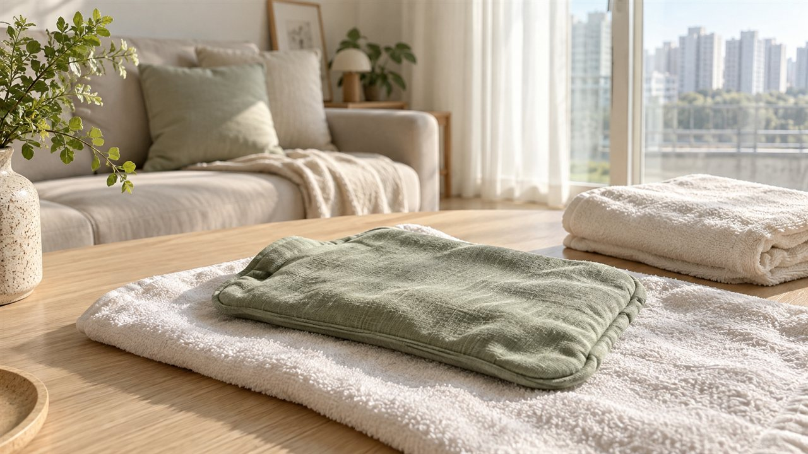
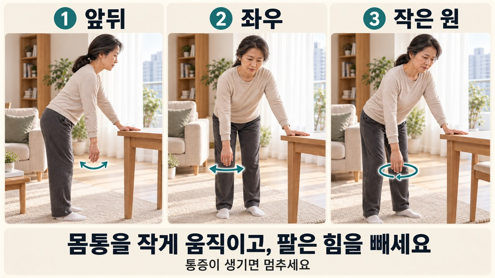

출근길에 자동차 뒷좌석에 놓아둔 서류 가방을 무심코 집으려다, 어깨 뒤편이 찌릿하게 걸려 얼어붙은 경험 있으신가요?
샤워할 때 등 뒤로 손을 돌려 거품을 칠하거나 티셔츠를 벗으려고 양팔을 번쩍 들 때마다 날카로운 뻐근함이 밀려오곤 합니다.
'단순한 환절기 근육통일까, 아니면 어깨가 굳어버린 오십견일까?' 덜컥 걱정이 앞서며 온종일 목덜미와 팔뚝을 조물거리게 되지요.
인터넷이나 헬스장에서는 "굳은 어깨는 눈물이 쏙 빠지도록 꺾어야 빨리 풀린다"는 험한 조언을 건네기도 합니다.
하지만 아픈 곳을 무작정 잡아당기면 오히려 더 불편해질 수 있어요.
1. 거울 앞에서 살피는 내 어깨, 1차 움직임 관찰 포인트
오른쪽 어깨의 불편감을 살펴보는 모습

팔이 뜻대로 올라가지 않을 때 집에서 우선 차분히 확인해 볼 수 있는 단서는 '도움을 받을 때의 반응'입니다.
스스로 팔을 들 때와 다른 사람이 살며시 받쳐줄 때의 차이는 진료실에서 확인하는 단서 중 하나예요.
집에서는 어느 쪽으로 움직일 때 불편한지 살펴두세요. 가족에게 억지로 팔을 올려달라며 움직임을 시험할 필요는 없어요.

오십견은 어깨를 둘러싼 관절 주머니가 두꺼워지고 뻣뻣해진 상태예요.
그래서 내 힘으로 올리기 힘든 것은 물론이고, 가족이 살며시 받쳐서 들어주어도 관절 속이 턱 걸리며 끝까지 올려주기 어렵습니다.
회전근개는 팔을 움직이는 힘줄들이며, 여기에 문제가 생겨도 팔을 들기 버거울 수 있어요.
혼자서 팔을 들 때는 힘이 들어가지 않아 끙끙 앓게 되지만, 가족이 아래를 든든하게 받쳐주면 통증이 있더라도 팔이 비교적 더 위쪽으로 올라가는 모습을 볼 수 있어요.
다만 통증이 심해 몸이 잔뜩 굳어있거나 두 문제가 함께 겹쳐 나타나는 경우도 많으니, 이 차이는 참고용 단서로만 삼고 진료실에서 정밀하게 확인하는 것이 원칙입니다.
2. 아파도 억지로 꺾어야 할까? 위험한 통설과 안전 기준

수건 위에 준비한 온찜질 팩

주변 분들의 말만 믿고 문틀을 붙잡고 몸을 비틀거나 공원 철봉에 매달려 어깨를 억지로 잡아 늘리는 분들이 계십니다.
솔직하게 말씀드리면, 이런 거친 동작은 관절을 지키기는커녕 회복을 더디게 만드는 안타까운 행동이에요.
어깨가 굳기 시작하는 시기에는 움직일 때뿐 아니라 밤에도 욱신거려 잠을 깨기도 합니다.
통증이 심한 시기에 거칠게 늘리면 어깨가 더 아파질 수 있습니다.

억지로 높은 곳까지 올리려 애쓰기보다 지금 편하게 움직일 수 있는 폭부터 살펴보세요.
가족이나 주변 사람에게 부탁해 팔을 강제로 꺾어 올리는 일 역시 절대로 해서는 안 될 위험한 방법입니다.
3. 힘을 빼고 중력에 맡기는 시계추 릴랙스 홈케어

팔의 이동 방향은 앞뒤·좌우·작은 원
시계추 운동은 팔을 아래로 내려놓은 채 가볍게 흔드는 동작이에요.
그림의 화살표를 따라 앞뒤, 좌우, 작은 원 순으로 살펴보세요. 팔로 크게 휘두르는 대신 몸을 조금 움직여 오른팔이 따라 흔들리게 합니다.
불편한 팔이 왼쪽이라면 사진과 반대로 손을 바꾸면 됩니다.

[시계추 릴랙스 정석 3단계]
1단계 지지대 짚기: 흔들림 없는 튼튼한 식탁 앞에 서서, 아프지 않은 손으로 모서리를 단단하게 짚어 상체를 받쳐줍니다.
2단계 편한 자세 찾기: 몸을 조금 앞으로 기울여 아픈 팔이 아래로 내려오게 해주세요. 허리를 몇 도까지 숙일지에 매달릴 필요는 없어요.
3단계 작게 흔들기: 몸을 살짝 움직여 팔이 앞뒤로 따라 흔들리게 해보세요. 편하게 할 수 있다면 좌우로 움직이거나 작은 원을 그려봅니다.
팔을 힘차게 돌리거나 어깨를 치켜올리지는 마세요. 아프면 바로 쉬고, 몇 번씩 할지는 진료실에서 배운 범위에 맞춰주세요.
따뜻한 찜질로 운동 전 뻣뻣함을 덜기도 하지만, 잠시 편안해졌다고 동작을 크게 해도 된다는 뜻은 아니에요.
4. 수건 한 장으로 서서히 넓히는 부드러운 가동범위
두 손과 수건이 보이는 등 뒤 스트레칭 준비 자세

수건 운동은 등 뒤로 손을 보내는 동작이라 어깨 상태에 따라 버거울 수 있어요. 시계추를 하다 덜 아파졌다는 이유만으로 바로 이어가지는 마세요.
먼저 이 동작을 해도 되는지 진료실에서 확인해 주세요. 아래 손이 등 뒤에 닿기 어렵거나 수건을 잡기부터 아프다면 무리해서 자세를 만들지 마세요.
[수건을 활용한 부드러운 스트레칭 요령]
1. 긴 수건을 돌돌 말아 등 뒤로 늘어뜨린 뒤, 아프지 않은 손은 목 뒤 위쪽에서 잡고 아픈 손은 허리 뒤 아래쪽에서 잡습니다.
2. 위쪽 손으로 수건을 위로 천천히 당겨 올려주면, 아래쪽 아픈 팔이 조용히 따라 올라오며 어깨 주변이 서서히 펴지게 됩니다.
3. 가볍게 당기는 느낌까지만 움직인 뒤 서서히 풀어주세요. 몸을 비틀며 더 끌어올리거나 통증을 견디며 버티지는 마세요.
유지하는 시간과 되풀이하는 횟수는 어깨 상태에 맞춰 안내받아 주세요. 사진 속 높이까지 올리는 것이 목표는 아닙니다.
5. 언제 진료실 진찰과 정밀 검사가 꼭 필요할까요?
진료 전 증상을 정리할 수 있는 노트와 펜
어깨 통증은 자연스레 낫겠거니 하며 참고 견디다 보면 뻣뻣한 불편함이 장기화될 수 있습니다.
아래와 같은 신호가 관찰된다면 혼자서 참지 마시고 진료실에서 담당의의 진찰을 받아보셔야 합니다.
첫째, 밤에 통증으로 자꾸 깨거나 옷 입기와 씻기가 계속 불편할 때.
둘째, 팔을 옆으로 들어 올리는 도중 특정 높이에서 힘이 툭 빠지며 잔을 떨어뜨릴 것 같을 때.
셋째, 넘어지거나 짐을 든 뒤 갑자기 팔을 움직이기 힘들어진 때. 이때는 운동부터 시도하기보다 진료를 먼저 받아보세요.
언제부터 불편했는지와 다친 일이 있었는지를 메모해 가세요. 검사가 필요한지는 담당의가 어깨를 살핀 뒤 결정합니다.

굳어버린 어깨를 대할 때 무엇보다 중요한 마음가짐은 조급함 대신 차분한 배려입니다.
오늘은 팔을 얼마나 높이 들었는지보다, 힘을 뺐을 때 편하게 움직일 수 있었는지 살펴보세요.
급하게 당기기보다 내 속도로 움직이는 습관부터 챙겨보세요. 🍯
평소 구부정한 자세로 어깨와 목 주변이 자주 뭉친다면, 벽을 활용한 자세 교정 스트레칭도 함께 확인해 보세요!
- 국가건강정보포털 의학정보: 오십견(동결견, 유착관절낭염) 편
- 미국정형외과학회(AAOS): Frozen Shoulder 어깨 건강 안내
- 대한정형외과학회(KOA): 견관절 유착성 관절낭염 건강정보
- Shoulder & Elbow 학술지: Adhesive capsulitis of the shoulder 종설 (Le et al., 2017)